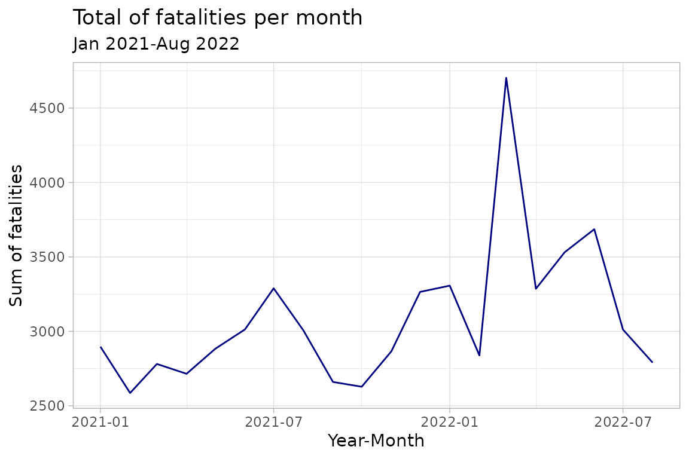
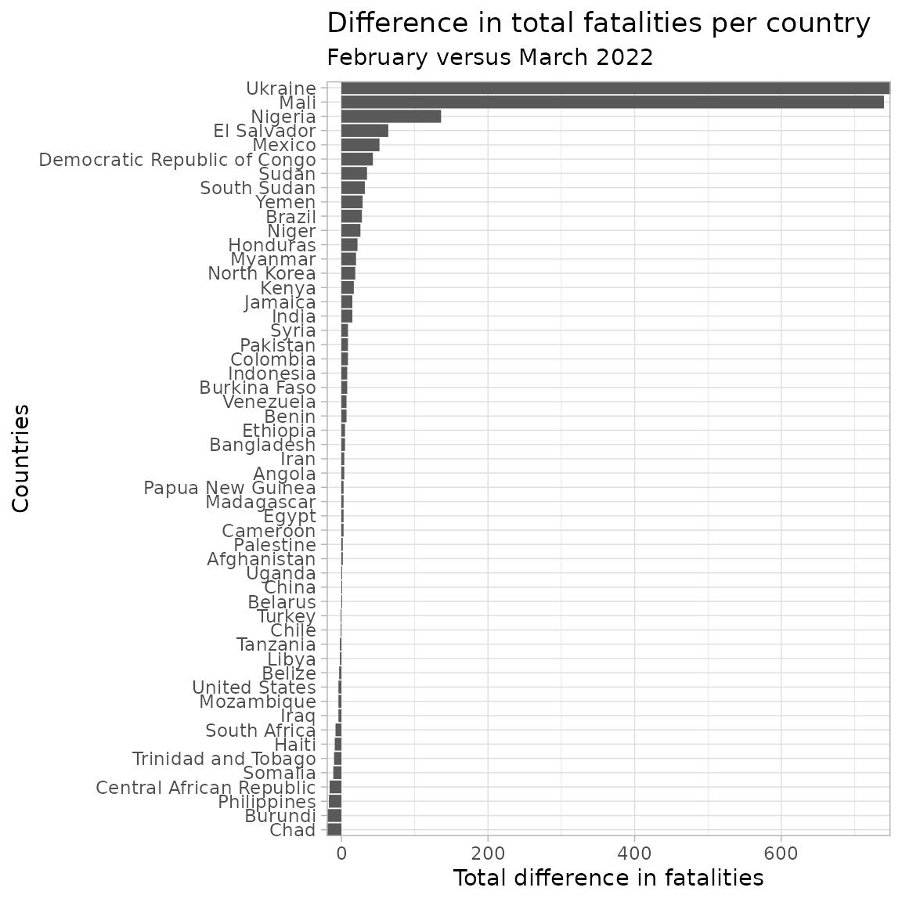

Fatality estimates associated with conflict events provide a measure of the scale and intensity political violence. While of clear importance, reliably tracking fatalities associated with violent events is notoriously difficult. Balancing the importance of understanding conflict fatalities with the difficulties of doing so with confidence, ACLED relies on a transparent and consistent methodology for tracking fatalities. This vignette briefly introduces this methodology; users are encouraged to visit our guide to get a more comprehensive picture on how ACLED measures fatalities.
How do we code fatalities?
ACLED researchers triangulate event information across multiple sources, often combining information from local media outlets as well as local partners. ACLED codes the most conservative fatality estimate available for each conflict event. Researchers then identify reports of fatalities rather than casualties, as casualties may also include injuries. If a researcher encounters a report of casualties but no deaths, ACLED codes the event as having 0 fatalities.
While ACLED acknowledges that this approach may underestimate fatalities, the consistent methodology provides confidence that, if not precisely accurate in all cases, the fatality estimates are conservative and therefore the expected direction of error is known. With less transparent fatality coding criteria, the error associated with a fatality estimate may be either high or low.
As mentioned across ACLED’s methodology, we rely on media and local partners’ reports to code fatalities. Because of this, if the reports do not make any mention of fatalities, these are not going to be coded. In some cases, however, sources may mention that fatalities occurred without including an actual number. When such cases occur - and researchers are unable to find any complementary information on the number of such fatalities - ACLED relies in a series of rules to provide an estimation of fatalities:
Is this a significant attack, in an active war zone? If yes, fatalities are estimated at 10.
E.g. An airstrike is dropped on a building in Yemen, resulting in an unspecified number of fatalities. [Yemen is a war zone and an airstrike is likely to yield high casualties]
Is this an attack of more limited scope, in an active war zone? If yes, fatalities are estimated at 3.
E.g. A bomb explodes at a checkpoint in Afghanistan, resulting in deaths. [Afghanistan is a war zone, yet checkpoints are often not manned by large numbers of people]
Is this an attack outside of a war zone? If yes, fatalities are estimated at 3.
E.g. Inter communal violence in Guinea leads to a number of deaths. [Guinea is not a warzone, and inter communal violence tends to not result in mass fatalities]
Is this a significant attack outside of a war zone? If yes, fatalities are estimated at 10.
E.g. A large-scale attack by Al Shabaab results in an unspecified number of fatalities in Kenya. [Kenya is not a war zone, yet this is a large-scale attack involving an actor in a neighboring war zone]
For that purpose, ACLED defines a country as a war zone if a single group or coalition is attempting to violently challenge the legitimacy and authority of the central government, and that same actor is active in over 20% of the territory - an assessment done qualitatively. Conflict zones are countries where there is organized political violence, yet it has not reach the threshold of a war zone. Unrest refers to protests and riots occurring in countries where there may not be much conflict occurring, yet unrest is commonplace. Finally, disorder is something which affects every country in ACLED coverage, which refers to all political violence and demonstration events.
Are these fatalities measures reliable?
As mentioned before, when we are coding fatalities we are speaking of estimations. Thus, there is always some room for new information to appear and change such measure. In such cases, ACLED modifies the events in the data set to reflect such new information. At the same time, ACLED’s efforts to provide the most conservative estimate gives an additional layer of reliability, as the measures are included only if they are backed by sources in the region.
How does ACLED deal with uncertainty?
The reason why refer to fatalities as estimates, is because there is always some degree of uncertainty. Tracking and reporting fatalities in an active conflict zone while the events are on-going is a multi-faceted complicated issue, where some actors may opt not to report on losses or on victims of their own attacks, or where civilians may not be readily available to report on these fatalities. Hence, it is not as simple as increasing the number of sources used to code these fatalities, because in some cases it may not be enough, and in others there may not be enough reliable sources given bias - bias either on how they report or on what do they report.
In order to address these short comings, ACLED develops regionally tailor-made approaches on finding more information on a given region. Contrary to just increasing the number of sources (which may just add even more biases and worsen the quality of information - quantity doesn’t ensure quality), ACLED aims to generate particular source combinations to reflect the reality of disorder and fatalities counts in each space. Generally, ACLED prioritizes local sources’ reports, such as local partners and sub national media, as these tend to avoid the sensationalization of lethality that often occurs in English language media.
acledR Example:
In order to demonstrate the use of the fatalities columns, we will look at fatalities in violence against civilians across 2021 and 2022 (the first half until August).
## [1] "Success! Credentials authorized"Lets now explore fatalities within the data set.
## fatalities n percent
## 1 24219 0.46
## 0 19271 0.37
## 2 4429 0.08
## 3 1840 0.04
## 4 746 0.01
summary(df_years$fatalities)## Min. 1st Qu. Median Mean 3rd Qu. Max.
## 0.000 0.000 1.000 1.213 1.000 404.000As we can see, our fatalities are for the most part concentrated in between 0 and 1, with the average being of 1.21 fatalities per event. That in itself it is a noticeable aspect, but we would like to go beyond this. We will set these in categories of tenths.
df_fatalities <- df_years %>%
mutate(fatalities_bins = case_when(
fatalities > 0 & fatalities <11 ~ "1 to 10",
fatalities > 10 & fatalities <101 ~ "11 to 100",
fatalities > 101 & fatalities <1001 ~ "101 to 1000",
TRUE ~ "0"
))
df_fatalities %>%
janitor::tabyl(fatalities_bins) %>%
janitor::adorn_rounding(2)%>%
arrange(-n)## fatalities_bins n percent
## 1 to 10 32466 0.62
## 0 19271 0.37
## 11 to 100 500 0.01
## 101 to 1000 14 0.00Now that we have a better understanding on how our fatalities data set is distributed, lets look at its evolution across 2021 and 2022.
df_fatalities_monthly <- df_fatalities %>%
group_by(Month = floor_date(ymd(event_date), "month")) %>%
summarise(fatalities_sum = sum(fatalities))
ggplot(df_fatalities_monthly,
aes(x = Month, y = fatalities_sum)) +
geom_line(color = "navy") +
labs(title = "Total of fatalities per month",
subtitle = "Jan 2021-Aug 2022",
x = "Year-Month",
y = "Sum of fatalities") +
theme_light()
From this graph, we can observe a peak in the number of fatalities in March 2022. To go slightly more in-depth, let’s explore the countries that saw the highest difference compared to the prior month.
df_fatalities_monthly_country <- df_fatalities %>%
group_by(Month = floor_date(ymd(event_date), "month"), country) %>%
summarise(fatalities_sum = sum(fatalities)) %>%
filter(Month < ymd("2022-04-01") & Month > ymd("2022-01-01")) %>%
arrange(country) %>%
group_by(country) %>%
summarise(difference = diff(fatalities_sum))%>%
arrange(-difference) %>%
filter(difference != 0) ## We are filtering out those countries which didn't change to make a more polished graph.
ggplot(df_fatalities_monthly_country,
aes(y = reorder(country, difference), x = difference)) +
geom_col() +
labs(title = "Difference in total fatalities per country ",
subtitle = "February versus March 2022",
x = "Total difference in fatalities",
y = "Countries") +
theme_light() +
# theme(panel.grid = element_blank()) +
coord_cartesian(expand = F)
Interestingly, we see Mali and Ukraine as the top countries making contributions to the new peak in fatalities, as these two were the countries with the biggest uptick in fatalities in March 2022 compared to February. If a reader saw the peak from the previous line chart, one may have swiftly explained it by the outbreak of the Russian invasion into Ukraine in late February. However, this would have missed the uptick in violence in Mali by Malian and Wagner forces (see our analysis for more information).